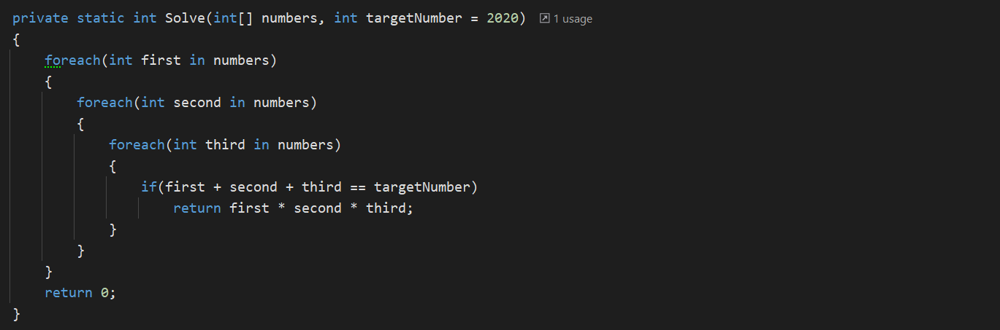
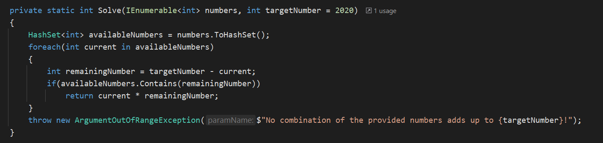
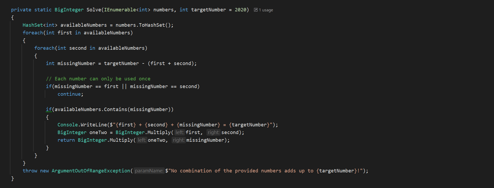
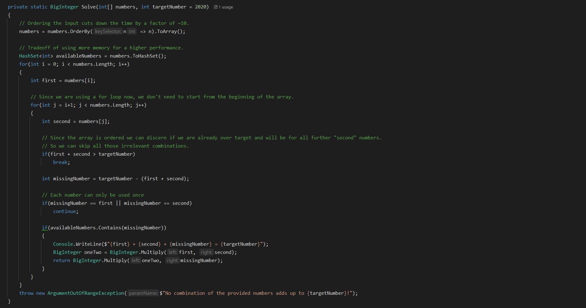

Advent of Code Day 1 challenge
What is this runtime you speak of?
So, first of let me explain what Advent of Code is. Every year Eric Wastl hosts an event by the name of Advent of Code, in which like with traditional advent calendars every day hides a new programming challenge. These start of quite simple and drastically scale up in difficulty leading up to December 24th.
Here I am talking about my solution for the first of these challenges. You can find the task specification here. I suggest looking at it before continuing reading, as the rest of the article would not make too much sense otherwise.
TL;DR: Compare all numbers in an array and find which two numbers add up to 2020.
The Naive Solution
Ah yes, what would be a programming task without the good old naïve solution?
This is the step where the programmer just types down whatever solution comes to mind first, often with sub optimal results:
Now this solution does work. It works quite well actually. It certainly gave me the correct answer to the puzzle. However, to each of these challenges there is a part 2. And the folly of this solution becomes even more obvious in that second part:
“Compare all numbers and find a combination of three numbers which adds up to 2020”
We can quite easily solve this by expanding our code:
The experienced programmer will probably see the problem here. Nesting loops, in this case foreach, is usually a bad sign. As the size of the input increases, so does the runtime. To see just how much the O notation is often used. This notation shows how long the runtime is in relation to the input.
O(1) would mean the runtime is independent input n.
O(n) would mean the runtime has a linear relation to the input n.
O(n²) has a quadratic runtime to the input n.
O(n³) has a cubic runtime to the input n.
And so on. In our case each for loop increases the exponent by 1. Our last example would therefore have a runtime of O(n³).
That might not sound to bad initially, but let’s look at the numbers for a second.
Let us assume that doing our operation on one input takes 1 second, an exceedingly high estimate but it gives a good view of the scales we are dealing with. Let us further assume we have 1000 input values. Then the time it takes to execute our program for the different runtimes is as follows.
O(1) -> 1 second
O(n) -> 1000 seconds -> ~16 minutes
O(n²) -> 1.000.000 seconds -> ~11,5 days
O(n³) -> 1.000.000.000 seconds -> ~ 31 years
Reducing runtime complexity
Our previous solution did work for the example given by AoC, however in many settings such as big data or video games such a runtime would not be good enough. Reducing the runtime complexity has priority.
Thankfully, there is a quite easy solution to reduce the runtime. C#, along with many other languages, offers a type of collection where checking if a value exists has a runtime of O(1).
Our savior the Hashset. Now we can calculate the remaining value needed to reach 2020 for each input, and simply check if it is included in the list of inputs.
We can extend this new method to work with part 2 as well.
This is still O(n²) but that cannot be helped. We already decreased the exponent by 1 which is worth gold.
Smaller optimisations
Finally, we can make some additional runtime improvements. By ordering the array and using a for loop instead of a for loop we can skip many duplicate comparisons.
The ordered array also allows us to skip any combinations that would result in a number that is higher than our target.
Through these adjustments we managed to decrease our runtime by around a factor of 10 for a 5mb input file provided by
With that our final code looks like this:
I will say that there was a palpable tradeoff of readability for performance, but sometimes those are the sacrifices we have to make for our craft.
You can check my code out at my AoC Repository on Git.
And while this was quite fun, do not expect me to write up a deep dive like this for every day.
I am quite fond of my sanity, thank you!